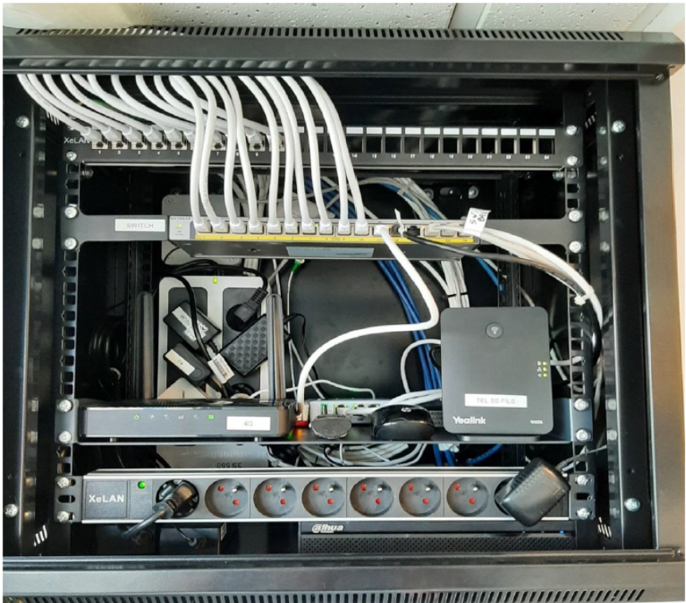
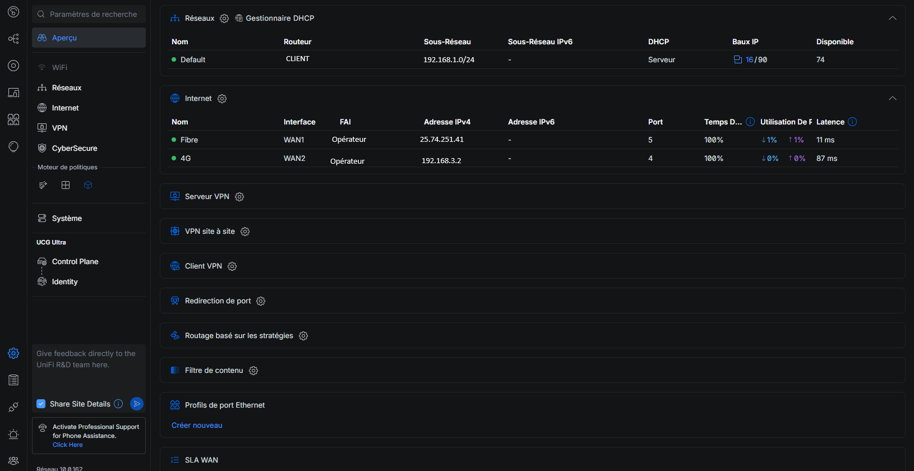
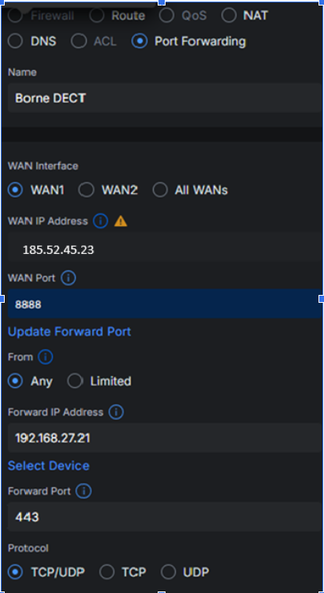

Dans le cadre d'un contrat de maintenance, l'entreprise cliente a constaté plusieurs limites liées à son ancienne infrastructure réseau. Les équipements en place étaient vieillissants, peu performants et ne permettaient pas d'assurer une continuité de service optimale en cas de panne Internet.
L'intervention a donc consisté à remplacer les anciens équipements par un routeur Ubiquiti plus performant, à intégrer un routeur 4G en backup, à revoir certaines règles NAT pour la gestion des équipements (notamment la borne DECT) et à vérifier la cohérence globale de la baie informatique.
La baie informatique présentée ci-dessous regroupe les équipements réseau nécessaires au bon fonctionnement du système d'information de l'entreprise. Elle assure la connectivité interne, l'accès à Internet, la téléphonie ainsi que la continuité de service en cas de panne :

Le routeur Ubiquiti constitue l'élément central du réseau. Il est configuré pour gérer à la fois le réseau local (LAN) et l'accès Internet (WAN).
Deux ports sont utilisés pour la connexion WAN, incluant un lien principal et un lien de secours via la 4G. L'un des autres ports du routeur est relié au switch afin de distribuer la connectivité au réseau local de l'entreprise.
Une règle de supervision a également été mise en place afin de surveiller l'état du routeur. Cette supervision repose sur une sonde de type ping, permettant de détecter rapidement une indisponibilité du routeur (routeur « down ») et d'agir en conséquence.

Le routeur 4G est utilisé comme solution de secours. En cas de panne de la connexion fibre principale, le trafic Internet est automatiquement basculé vers le lien 4G. Cette configuration permet d'assurer une continuité de service et de limiter les interruptions d'activité liées à une perte de connexion Internet.
La borne DECT est dédiée à la téléphonie sans fil de l'entreprise.
Afin d'éviter tout impact sur le reste du réseau et d'optimiser l'administration de l'équipement, une règle de translation de port (NAT) a été configurée. Cette règle permet un accès plus rapide et plus fluide à l'interface de gestion de la borne, facilitant ainsi sa prise en main et son administration.
Exemple (avec fausses IP) :
Tout trafic arrivant sur 185.52.45.23:8888 est redirigé vers
👉 192.168.27.21:443, depuis n'importe quelle IP, via WAN1.

Le switch présent dans la baie est un switch non manageable. Son rôle est de distribuer la connexion réseau aux différents équipements du réseau local. Ne disposant pas de fonctionnalités avancées de configuration ou de supervision, il fonctionne de manière simple et autonome, ce qui convient aux besoins actuels de l'infrastructure.
- 1 ▸ Recenser et identifier les ressources numériques
- 4 ▸ Vérifier les conditions de la continuité d'un service
- 2 ▸ Traiter des demandes concernant les services réseau et système
- 2 ▸ Déployer un service